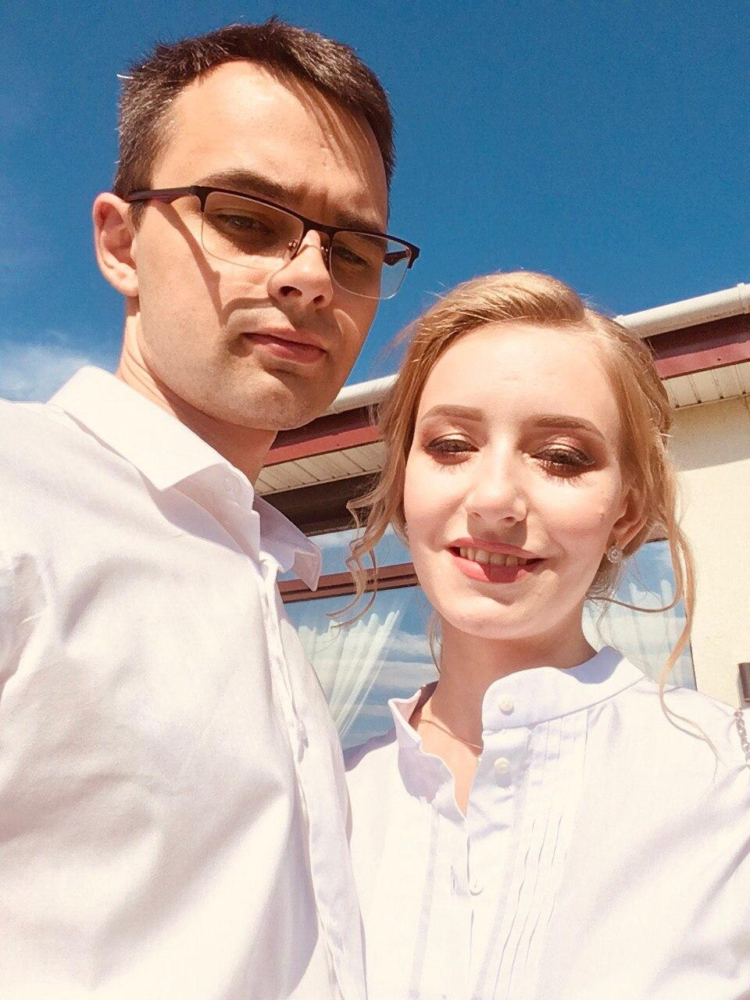

Привет!
Меня зовут Кирилл и на этом сайте я размещаю информацию по некоторым языкам программирования, логике, компьютерным наукам и графике.
Это, в некотором роде, очень краткий справочник по основам компьютерных направлений, предназначенный для детей.
Тут я буду стараться максимально понятно излагать материал и подкреплять его примерами.